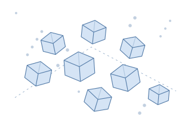

CONCEPTUAL ILLUSTRATIONFrom particle shape to colloidal assembly
Investigating how particle geometry and depletion interactions influence collective ordering, chiral selection and self-sorting.
Current research · NTU
Research details
I am developing a modular C++ Monte Carlo framework for hard particles and implicit ideal depletants. The work combines accelerated overlap detection, checkpoint/restart and literature benchmarks, and compares pairwise and many-body descriptions of depletion.